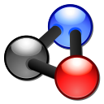

Application list
This array describe the application list ready to use with abcdesktop.
| icon | displayname | comment | description | json file |
|---|---|---|---|---|
| 2048 (alpine gtk) | Obtain the 2048 tile | 2048-alpine.md | 2048-alpine.d.3.0.json | |
| 2048 (ubuntu qt) | The 2048 number game implemented in Qt | 2048-ubuntu.md | 2048-ubuntu.d.3.0.json | |
| Apache Directory Studio | no comment | apachedirectorystudio.md | apachedirectorystudio.d.3.0.json | |
| astromenace | hardcore 3D space shooter with spaceship upgrade possibilities | astromenace.md | astromenace.d.3.0.json | |
| Base | Manage databases, create queries and reports to track and manage your information by using Base. | base.md | base.d.3.0.json | |
| Beekeeper-studio | An easy-to use SQL query editor and database UI for Mac, Windows, and Linux | beekeeperstudio.md | beekeeperstudio.d.3.0.json | |
| Blender | 3D modeling, animation, rendering and post-production | blender.md | blender.d.3.0.json | |
| Bless | Edit binary files | bless.md | bless.d.3.0.json | |
| blobby | no comment | blobby.md | blobby.d.3.0.json | |
| Gnome-boxes | View and use virtual machines | boxes.md | boxes.d.3.0.json | |
| Brackets | no comment | brackets.md | brackets.d.3.0.json | |
| calculator | Perform arithmetic, scientific or financial calculations | calculator.md | calculator.d.3.0.json | |
| chess | Play the classic two-player board game of chess | chess.md | chess.d.3.0.json | |
| Chrome | Access the Internet | chrome.md | chrome.d.3.0.json | |
| chromium (alpine) | no comment | chromium.md | chromium.d.3.0.json | |
| citrix-client | no comment | citrix.md | citrix.d.3.0.json | |
| Cloud Foundry cli | no comment | cloudfoundry.md | cloudfoundry.d.3.0.json | |
| cmd.exe wine (alpine) | no comment | cmd.exe.md | cmd.exe.d.3.0.json | |
| corsix-th | Open source clone of Theme Hospital | corsix-th.md | corsix-th.d.3.0.json | |
| cuda | Use the command line | cuda.md | cuda.d.3.0.json | |
| cuda demo | Use the command line | cudademo.md | cudademo.d.3.0.json | |
| cuda developper | Use the command line | cudadev.md | cudadev.d.3.0.json | |
| Dia | Edit your Diagrams | dia.md | dia.d.3.0.json | |
| Doom | no comment | doom.md | doom.d.3.0.json | |
| Draw | Create and edit drawings, flow charts and logos by using Draw. | draw.md | draw.d.3.0.json | |
| draw.io | draw.io desktop | drawio.md | drawio.d.3.0.json | |
| Microsoft Edge | Access the Internet | edge.md | edge.d.3.0.json | |
| eog | Browse and rotate images | eog.md | eog.d.3.0.json | |
| Evince | View multi-page documents | evince.md | evince.d.3.0.json | |
| Evolution | Manage your email, contacts and schedule | evolution.md | evolution.d.3.0.json | |
| file-roller | Create and modify an archive | file-roller.md | file-roller.d.3.0.json | |
| Filelight | View disk usage information | filelight.md | filelight.d.3.0.json | |
| filezilla (alpine) | Download and upload files via FTP, FTPS and SFTP | filezilla.md | filezilla.d.3.0.json | |
| Firefox (esr alpine) | Browse the World Wide Web | firefox-esr.md | firefox-esr.d.3.0.json | |
| Firefox (alpine) | Browse the World Wide Web | firefox.md | firefox.d.3.0.json | |
| flare | A single player, 2D-isometric, action Role-Playing Game | flare.md | flare.d.3.0.json | |
| frozen-bubble | no comment | frozen-bubble.md | frozen-bubble.d.3.0.json | |
| GCompris | no comment | gcompris.md | gcompris.d.3.0.json | |
| Geany | A fast and lightweight IDE using GTK+ | geany.md | geany.d.3.0.json | |
| Gedit | no comment | gedit.md | gedit.d.3.0.json | |
| gElemental | View the periodic table of elements | gelemental.md | gelemental.d.3.0.json | |
| Geogebra | no comment | geogebra.md | geogebra.d.3.0.json | |
| Gimp | Create images and edit photographs | gimp.md | gimp.d.3.0.json | |
| Gnumerix (alpine) | Calculation, Analysis, and Visualization of Information | gnumeric.md | gnumeric.d.3.0.json | |
| Golly | no comment | golly.md | golly.d.3.0.json | |
| hyper | A terminal built on web technologies | hyper.md | hyper.d.3.0.json | |
| Impress | Create and edit presentations for slideshows, meeting and Web pages by using Impress. | impress.md | impress.d.3.0.json | |
| inkscape | no comment | inkscape.md | inkscape.d.3.0.json | |
| jupyter | Use the command line | jupyter.md | jupyter.d.3.0.json | |
| jupyter nvidia | Use the command line | jupyternvidia.md | jupyternvidia.d.3.0.json | |
|  | Kalzium | KDE Periodic Table of Elements | kalzium.md | kalzium.d.3.0.json |
| kDiamond | no comment | kdiamond.md | kdiamond.d.3.0.json | |
| Kgeography | A Geography Learning Program | kgeography.md | kgeography.d.3.0.json | |
| kigo | no comment | kigo.md | kigo.d.3.0.json | |
| Klickety | no comment | klickety.md | klickety.d.3.0.json | |
| klotski | no comment | klotski.md | klotski.d.3.0.json | |
| konsole | no comment | konsole.md | konsole.d.3.0.json | |
| kSquares | no comment | ksquares.md | ksquares.d.3.0.json | |
| kTurtle | Educational Programming Environment | kturtle.md | kturtle.d.3.0.json | |
| Leocad | no comment | leocad.md | leocad.d.3.0.json | |
| LibreCAD | no comment | librecad.md | librecad.d.3.0.json | |
| mahjongg | no comment | mahjongg.md | mahjongg.d.3.0.json | |
| maps | A simple maps application | maps.md | maps.d.3.0.json | |
| Math | Create and edit scientific formulas and equations by using Math. | math.md | math.d.3.0.json | |
| Mathwar | no comment | mathwar.md | mathwar.d.3.0.json | |
| minecraft | Official Minecraft Launcher | minecraft.md | minecraft.d.3.0.json | |
| gnome-mines (alpine) | Clear hidden mines from a minefield | mines.md | mines.d.3.0.json | |
| FileManager | Access and organize files | nautilus.md | nautilus.d.3.0.json | |
| Notepad Wine (alpine) | no comment | notepad-wine.md | notepad-wine.d.3.0.json | |
| notepadqq | Edit source code files | notepadqq.md | notepadqq.d.3.0.json | |
| octave | no comment | octave.md | octave.d.3.0.json | |
| OnlyOffice | Edit office documents | onlyoffice.md | onlyoffice.d.3.0.json | |
| Pinta (alpine) | Easily create and edit images | pinta.md | pinta.d.3.0.json | |
| Planner | no comment | planner.md | planner.d.3.0.json | |
| Postman | no comment | postman.md | postman.d.3.0.json | |
| Powershell | no comment | powershell.md | powershell.d.3.0.json | |
| Putty Unix | no comment | putty-unix.md | putty-unix.d.3.0.json | |
| Putty Wine (alpine) | no comment | putty-wine.md | putty-wine.d.3.0.json | |
| qElectrotech | no comment | qelectrotech.md | qelectrotech.d.3.0.json | |
| Remarkable | A free, fully featured markdown editor for Linux. | remarkable.md | remarkable.d.3.0.json | |
| Remmina | Access remote desktops with Remmina | remmina.md | remmina.d.3.0.json | |
| RemoteDesktop | no comment | remotedesktopmanager.md | remotedesktopmanager.d.3.0.json | |
| rhythmbox | Play and organize your music collection | rhythmbox.md | rhythmbox.d.3.0.json | |
| Robots | no comment | robots.md | robots.d.3.0.json | |
| Shotcut | Shotcut is a free, open source, cross-platform video editor. | shotcut.md | shotcut.d.3.0.json | |
| Stellarium | Planetarium | stellarium.md | stellarium.d.3.0.json | |
| Step | Simulate physics experiments | step.md | step.d.3.0.json | |
| stress | no comment | stress.md | stress.d.3.0.json | |
| sublime-Text | Sophisticated text editor for code, markup and prose | sublime-text.md | sublime-text.d.3.0.json | |
| sudoku | Test your logic skills in this number grid puzzle | sudoku.md | sudoku.d.3.0.json | |
| supertux2 | Play a classic 2D platform game | supertux2.md | supertux2.d.3.0.json | |
| swell-foop | Clear the screen by removing groups of colored and shaped tiles | swell-foop.md | swell-foop.d.3.0.json | |
| taquin | Slide tiles to their correct places | taquin.md | taquin.d.3.0.json | |
| Microsoft Teams | Microsoft Teams for Linux is your chat-centered workspace in Office 365. | teams.md | teams.d.3.0.json | |
| Terminal sudo | Use the command line | terminal.md | terminal.d.3.0.json | |
| Terminal [ephemeral container] | Use the command line | terminalephemeral.md | terminalephemeral.d.3.0.json | |
| Terminal [Pod] | Use the command line | terminalpod.md | terminalpod.d.3.0.json | |
| Tetravex | no comment | tetravex.md | tetravex.d.3.0.json | |
| Thunderbird | Send and receive mail with Thunderbird | thunderbird.md | thunderbird.d.3.0.json | |
| Commodore64 | vice.md | vice.d.3.0.json | ||
| videolan | Read, capture, broadcast your multimedia streams | vlc.md | vlc.d.3.0.json | |
| vmmacos | no comment | vmmacos.md | vmmacos.d.3.0.json | |
| VMRC | Connect to remote virtual machines | vmrc.md | vmrc.d.3.0.json | |
| vmubuntu | no comment | vmubuntu.md | vmubuntu.d.3.0.json | |
| VSCode | Code Editing. Redefined. | vscode.md | vscode.d.3.0.json | |
| weather | Show weather conditions and forecast | weather.md | weather.d.3.0.json | |
| whatsdesk | unofficial whatsapp client for linux | whatsdesk.md | whatsdesk.d.3.0.json | |
| Winefile Wine (alpine) | no comment | winefile-wine.md | winefile-wine.d.3.0.json | |
| WineMine Wine (alpine) | no comment | winemine-wine.md | winemine-wine.d.3.0.json | |
| Winhelp Wine | no comment | winhelp-wine.md | winhelp-wine.d.3.0.json | |
| WinSCP | no comment | winscp-wine.md | winscp-wine.d.3.0.json | |
| wireshark (alpine) | Network traffic analyzer | wireshark.md | wireshark.d.3.0.json | |
| Writer alpine | Create and edit text and graphics in letters, reports, documents and Web pages by using Writer. | writer.md | writer.d.3.0.json | |
| Xclock | no comment | xclock.md | xclock.d.3.0.json | |
| Xedit | no comment | xedit.md | xedit.d.3.0.json | |
| xeyes | no comment | xeyes.md | xeyes.d.3.0.json | |
| Xman | no comment | xman.md | xman.d.3.0.json | |
| Xpad | Jot down notes for later | xpad.md | xpad.d.3.0.json | |
| Xterm (sudo) | standard terminal emulator for the X window system | xterm.md | xterm.d.3.0.json |